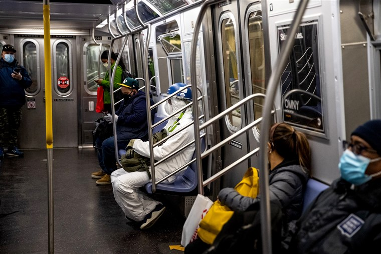

The central artery of New York City, the public transportation system is central to the cultural and economic well-being. Among its usual million daily users such as hip hop dancers, Wall Street executives, and the famous pizza rat, the subway proves to be more than a means of transport; it is a way of life.
Unfortunately, the COVID-19 pandemic and the “New York State on PAUSE” executive order, issued on March 14, 2020 aimed to slow the spread of the virus, brought tremendous shock to the normal bustle of New York City. Closed museums, theaters, restaurants, and suspended commutes have created ghost town-like scenes and some people to proclaim that New York City is “over” as we know it.
This project moves forward with the aim of understanding the influence of the COVID-19 pandemic on human mobility trends in NYC as measured by MTA ridership on subway trains and buses from March to December 2019 and 2020.
We initially wanted to explore mobility trends by borough and expand our means of transportation to air traffic. However, we did not find adequate information on mobility trends at the borough level and realized that adding air traffic would be a bit overwhelming for the scope of this project. We identified Apple Mobility Trend data as a potential source but ultimately decided to use MTA data due to more appropriate variables. The Apple data only provided percentage change values and not the crude number of ridership, which was important for our visualization and statistical tests. Additionally, we expected to explore trends for the whole calendar year and were limited by only having available data from March to December.